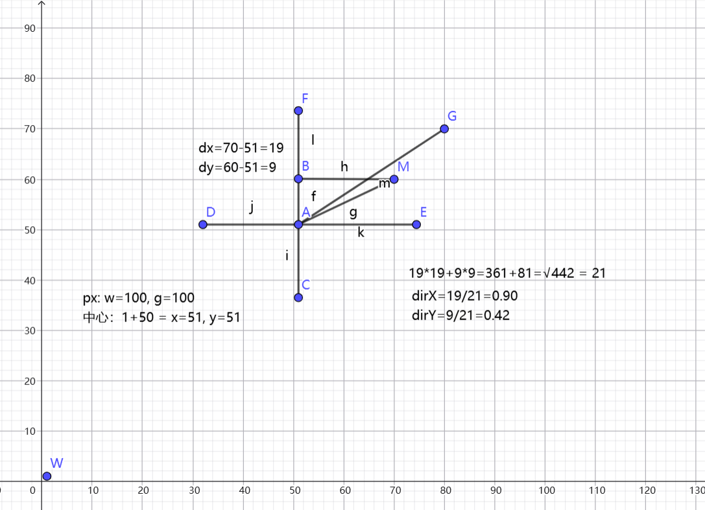
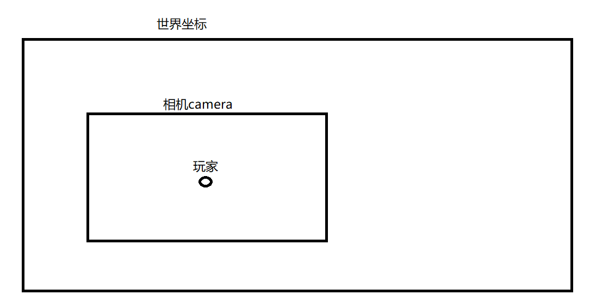

# libgdx
# 2D
# 移动
移动 = 时间 * 速度
x += speed * delta |
create():
player.setSize(100, 100); | |
playerX = 100; | |
playerY = 100; |
render():
时间：
float delta = Gdx.graphics.getDeltaTime(); | |
if (Gdx.input.isKeyPressed(Input.Keys.W)) { | |
playerY += playerSpeed * delta; | |
} |
防止玩家越界：
playerY = MathUtils.clamp(playerY, 0, Gdx.graphics.getHeight() - 100); |
player.setPosition(playerX, playerY); |
# 转向
鼠标坐标 - 玩家中心坐标 = 玩家到鼠标的距离，通过 atan2 计算弧度 * MathUtils.radiansToDegrees 得到角度
最终 setRotation (playerAngle)
获取鼠标 x,y 坐标：
- 注意：libgdx 中的坐标系与 windows 的坐标系相反 所以 y 轴需要 高度 - 鼠标 y 轴 = 实际鼠标 y 轴
// 鼠标在游戏中的坐标 | |
float mouseX = Gdx.input.getX(); | |
float mouseY = Gdx.graphics.getHeight() - Gdx.input.getY(); |
计算玩家中心：
// 玩家中心 | |
float playerCenterX = playerX + player.getWidth() / 2f; | |
float playerCenterY = playerY + player.getHeight() / 2f; |
计算玩家到鼠标的距离：
float dx = mouseX - playerCenterX; | |
float dy = mouseY - playerCenterY; |
计算角度：
playerAngle = MathUtils.atan2(dy, dx) * MathUtils.radiansToDegrees; |
atan2=dy/dx (弧度)*57.2 = 角度
如果 player 是 Sprite 对象
player.setRotation(playerAngle); |
如果 player 是单独对象
public float getMouseAngle(OrthographicCamera camera) { | |
// 转换为屏幕坐标 | |
Vector3 mouse = new Vector3( | |
Gdx.input.getX(), | |
Gdx.input.getY(), | |
0 | |
); | |
camera.unproject(mouse); | |
float playerCenterX = x + width / 2f; | |
float playerCenterY = y + height / 2f; | |
// 计算角度 | |
return MathUtils.atan2(mouse.y - playerCenterY, mouse.x - playerCenterX) * MathUtils.radiansToDegrees; | |
} |
设置，图像，坐标，中心，宽高，角度，图像宽高
public void draw(SpriteBatch s, float angle) { | |
s.draw(texture, x, y, width / 2, height / 2, | |
width, height, 1, 1, angle, | |
0, 0, texture.getWidth(), texture.getHeight(), | |
false, false); | |
} |
# 子弹
查看转向，需要通过计算的鼠标距离来完成计算子弹移动
公式：
玩家到鼠标坐标距离的 2 次方相加 = 根号结果 = 玩家到鼠标的斜边长度
玩家到鼠标距离坐标 / 斜边长度 = 子弹方向
子弹移动 = 子弹方向 * 子弹速度 * 时间
bullet.x += bullet.dirX * bulletSpeed * delta; | |
bullet.y += bullet.dirY * bulletSpeed * delta; |

private float jg = 0.0f; // 子弹发射间隔 | |
private float cz = 0.1f; // 重置发射时间 |
jg -= delta; | |
if (Gdx.input.isButtonPressed(Input.Buttons.LEFT) && jg <= 0.0f) { | |
float length = (float) Math.sqrt(dx * dx + dy * dy); | |
if (length > 0.001f) { | |
float dirX = dx / length; | |
float dirY = dy / length; | |
bullets.add(new Bullet(playerCenterX - 5, playerCenterY - 5, dirX, dirY, 10, 10)); | |
jg = cz; | |
} | |
} |
# 碰撞检测
敌人
定义成员变量
private Rectangle bounds; |
返回对象方法
public Rectangle getBounds() { | |
bounds.set(x, y, width, height); | |
return bounds; | |
} |
地图碰撞
地图中有很多的物体我们创建一个类来方便管理它们的类型
public class Collider { | |
Rectangle bounds; | |
TileType type; | |
} |
初始化
for (int row = 0; row < map.length; row++) { | |
for (int col = 0; col < map[row].length; col++) { | |
if (map[row][col] == WALL || map[row][col] == TREE) { | |
Rectangle wall = new Rectangle( | |
col * tileSize, | |
row * tileSize, | |
tileSize, | |
tileSize | |
); | |
colliders.add(new Collider(wall, map[row][col])); | |
} | |
} | |
} |
检测方法
public boolean checkCollision() { | |
// 碰撞检测 | |
for (Enemy e : enemies) { | |
if (player.getBounds().overlaps(e.getBounds())) { | |
return true; | |
} | |
} | |
for(Collider c : colliders) { | |
if (player.isJumping() && c.getType() == TileType.TREE) { | |
continue; | |
} | |
if (player.getBounds().overlaps(c.getBounds())) { | |
return true; | |
} | |
} | |
return false; | |
} |
玩家移动检测碰撞
// 玩家移动 / 碰撞检测 | |
public void updatePlayer(float delta) { | |
float oldPlayerY = player.getY(); | |
float oldPlayerX = player.getX(); | |
float mapHeight = map.length * tileSize; | |
float mapWidth = map[0].length * tileSize; | |
// 玩家移动 | |
// 检测 X 轴碰撞恢复 | |
player.removeX(delta, mapWidth); | |
if (checkCollision()) { | |
player.setX(oldPlayerX); | |
} | |
// 检测 Y 轴碰撞恢复 | |
player.removeY(delta, mapHeight); | |
if (checkCollision()) { | |
player.setY(oldPlayerY); | |
} | |
// 玩家跳跃 | |
player.jumpPre(delta); | |
} |
先检测 x 轴的碰撞 恢复，然后再检测 y 轴碰撞恢复。如果把 xy 轴不分开的话会导致不能滑边的情况，会卡脚
# 绘制血条
// 血条总长度 | |
float barWidth = width; | |
float barHeight = 5; | |
// 血条位置：玩家上方 10 像素 | |
float barX = x; | |
float barY = y + height + 10; | |
// 背景 | |
shape.setColor(1, 0, 0, 1); | |
shape.rect( | |
barX, | |
barY, | |
barWidth, | |
barHeight | |
); | |
// 当前血量比例 | |
float hpPercent = hp / 100f; | |
// 当前血量 | |
shape.setColor(0, 1, 0, 1); | |
shape.rect( | |
barX, | |
barY, | |
barWidth * hpPercent, | |
barHeight | |
); |
shapeRenderer 要单独绘制
shapeRenderer.begin(ShapeRenderer.ShapeType.Filled); | |
player.drawHealthBar(shapeRenderer); | |
shapeRenderer.end(); |
# 地图 - 防止越界
当添加地图瓦片时，如果地图大于窗口边缘，当物体移动时会检测到碰撞为窗口边缘那么物体不能移动到瓦片边缘
公式：width = 数组宽 * 瓦片大小。height = 数组高 * 瓦片大小
代码：
地图
private final TileType[][] map = { | |
{WALL, WALL, WALL, WALL, WALL, WALL, WALL, WALL, WALL, WALL, WALL, WALL, WALL, WALL, WALL}, | |
{WALL, GROUND, GROUND, GROUND, GROUND, GROUND, GROUND, GROUND, GROUND, GROUND, GROUND, GROUND, GROUND, GROUND, WALL}, | |
{WALL, GROUND, GROUND, GROUND, GROUND, GROUND, GROUND, GROUND, GROUND, GROUND, GROUND, GROUND, GROUND, GROUND, WALL}, | |
{WALL, GROUND, GROUND, GROUND, GROUND, GROUND, GROUND, GROUND, GROUND, GROUND, GROUND, TREE, GROUND, GROUND, WALL}, | |
{WALL, GROUND, GROUND, GROUND, WALL, WALL, GROUND, GROUND, TREE, TREE, GROUND, GROUND, GROUND, GROUND, WALL}, | |
{WALL, GROUND, GROUND, GROUND, GROUND, GROUND, GROUND, GROUND, GROUND, GROUND, GROUND, GROUND, GROUND, GROUND, WALL}, | |
{WALL, GROUND, GROUND, GROUND, GROUND, GROUND, GROUND, GROUND, GROUND, GROUND, GROUND, GROUND, GROUND, GROUND, WALL}, | |
{WALL, WALL, WALL, WALL, WALL, WALL, WALL, WALL, WALL, WALL, WALL, WALL, WALL, WALL, WALL} | |
} |
处理
// 计算地图边界 | |
float mapHeight = map.length * tileSize; | |
float mapWidth = map[0].length * tileSize; | |
// 玩家移动 | |
player.removeX(delta, mapWidth); | |
player.removeY(delta, mapHeight); | |
// 实现方法 | |
public void removeX(float delta, float width) { | |
if (Gdx.input.isKeyPressed(Input.Keys.A)) { | |
x -= speed * delta; | |
} | |
if (Gdx.input.isKeyPressed(Input.Keys.D)) { | |
x += speed * delta; | |
} | |
x = MathUtils.clamp(x, 0, width - this.width); | |
} | |
public void removeY(float delta, float height) { | |
if (Gdx.input.isKeyPressed(Input.Keys.W)) { | |
y += speed * delta; | |
} | |
if (Gdx.input.isKeyPressed(Input.Keys.S)) { | |
y -= speed * delta; | |
} | |
y = MathUtils.clamp(y, 0, height - this.height); | |
} |
# 相机坐标
需要理解，世界坐标，相机坐标 (camera)，屏幕坐标，鼠标坐标

// 成员变量 | |
private OrthographicCamera camera; | |
// 初始化 | |
camera = new OrthographicCamera(); | |
camera.setToOrtho( | |
false, | |
wi, | |
hi | |
); | |
camera.update(); | |
//resize 实施绘制窗口 | |
camera.setToOrtho( | |
false, | |
width, | |
height | |
); | |
camera.update(); | |
// 相机跟随玩家移动并且防止超越边界 | |
// 地图大小 | |
float mapWidth = map[0].length * tileSize; | |
float mapHeight = map.length * tileSize; | |
// 相机中心 | |
float cameraHalfWidth = camera.viewportWidth / 2f; | |
float cameraHalfHeight = camera.viewportHeight / 2f; | |
// 玩家中心 | |
float cameraX = player.getX() + player.getWidth() / 2f; | |
float cameraY = player.getY() + player.getHeight() / 2f; | |
// 限制相机边界 | |
cameraX = Math.max(cameraHalfWidth, | |
Math.min(cameraX, mapWidth - cameraHalfWidth)); | |
cameraY = Math.max(cameraHalfHeight, | |
Math.min(cameraY, mapHeight - cameraHalfHeight)); | |
// 相机跟随玩家 | |
camera.position.set( | |
cameraX, cameraY, 0 | |
); | |
camera.update(); | |
batch.setProjectionMatrix(camera.combined); | |
shapeRenderer.setProjectionMatrix(camera.combined); |
问题：
此时鼠标坐标对应了屏幕坐标而不是相机坐标会出现鼠标坐标错误的问题
解决思路：将鼠标坐标转换为世界坐标
Gdx.input.getX() | |
Gdx.input.getY() |
这个代码得到的是屏幕坐标，但是玩家，敌人，地图现在都是 世界坐标
所以相机移动以后：
鼠标 | |
↓ | |
屏幕坐标 | |
↓ | |
转换 | |
↓ | |
世界坐标 | |
↓ | |
玩家 → 鼠标方向 |
libgdx 已经帮我们提供了转换方法：
camera.unproject()
Vector3 mouse = new Vector3( | |
Gdx.input.getX(), | |
Gdx.input.getY(), | |
0 | |
); | |
camera.unproject(mouse); |
注意：子弹逻辑如果出现问题可能需要更改判定越界逻辑，改为边界为地图大小
# 跳跃
定义变量
// 是否跳跃 | |
private boolean jumping = false; | |
// 跳跃高度 | |
private float jumpHeight = 0f; | |
// 跳跃速度 | |
private float jumpVelocity = 0f; | |
// 起跳速度 | |
private final float jumpSpeed = 500f; | |
// 重力 (落地时间) | |
private final float gravity = 1200f; |
实现方法
位置变化：
位置 += 速度 * 时间
重力改变速度
速度 -= 重力 * 时间
public void jump() { | |
if (!jumping) { | |
jumping = true; | |
jumpVelocity = jumpSpeed; | |
} | |
} | |
public void updateJump(float delta) { | |
if (!jumping) { | |
return; | |
} | |
jumpHeight += jumpVelocity * delta; | |
jumpVelocity -= gravity * delta; | |
if (jumpHeight <= 0f) { | |
jumpHeight = 0f; | |
jumpVelocity = 0f; | |
jumping = false; | |
} | |
} | |
public void jumpPre(float delta) { | |
if (Gdx.input.isKeyJustPressed(Input.Keys.SPACE)) { | |
jump(); | |
} | |
updateJump(delta); | |
} | |
public void draw(SpriteBatch s, float angle) { | |
s.draw(texture, x, y + jumpHeight, width / 2, height / 2, | |
width, height, 1, 1, angle, | |
0, 0, texture.getWidth(), texture.getHeight(), | |
false, false); | |
} |
绘制中 y + jumpHeight 只是修改玩家绘制位置，并不会修改玩家实际位置
玩家 | |
│ | |
┌─────────┴─────────┐ | |
↓ ↓ | |
地面位置 视觉高度 | |
x / y jumpHeight | |
│ │ | |
↓ ↓ | |
碰撞检测 Sprite绘制 |
# 跳跃穿过物体防止卡住
- 问题
跳跃时允许玩家穿过树
if (player.isJumping() && c.getType() == TileType.TREE) { | |
continue; | |
} |
但是这样会出现：
跳跃 -> 进入树里面 -> 落地 -> 树恢复碰撞 -> 玩家卡在树里面
- 解决思路
允许跳跃时穿树，但不允许玩家在树里面落地
所以需要记录一个
private float safeX; | |
private float safeY; |
表示：
玩家最近一次没有进入树的安全位置
- Player 增加安全位置
private float safeX; | |
private float safeY; |
开始跳跃时记录：
safeX = x; | |
safeY = y; |
- 跳跃过程中更新安全位置
玩家正在跳跃时：
if (player.isJumping()) { | |
if (!isInsideTree()) { | |
player.setSafePosition( | |
player.getX(), | |
player.getY() | |
); | |
} | |
} |
只有不在树里面时，才更新安全位置
- 判断玩家是否进入树
private boolean isInsideTree() { | |
for (Collider c : colliders) { | |
if (c.getType() != TileType.TREE) { | |
continue; | |
} | |
if (player.getBounds().overlaps(c.getBounds())) { | |
return true; | |
} | |
} | |
return false; | |
} |
返回：
true → 玩家在树里面 | |
false → 玩家不在树里面 |
- 玩家落地时检查
记录跳跃前的状态:
boolean wasJumping = player.isJumping(); | |
player.jumpPre(delta); |
如果发现：
wasJumping && !player.isJumping() |
说明：
玩家刚刚落地
这时检查：
if (isInsideTree()) { | |
player.setX(player.getSafeX()); | |
player.setY(player.getSafeY()); | |
} |
如果落地时人在树里：
树里面 | |
↓ | |
回到最近的安全位置 |
- 最终逻辑
开始跳跃 | |
↓ | |
记录 safeX / safeY | |
↓ | |
跳跃时可以穿过树 | |
↓ | |
不在树里 → 更新安全位置 | |
↓ | |
进入树里 → 不再更新安全位置 | |
↓ | |
玩家落地 | |
↓ | |
检查是否在树里 | |
↓ | |
是 → 回到 safeX / safeY | |
否 → 正常落地 |
核心思想
跳跃可以穿过树，但是不能在树里面落地